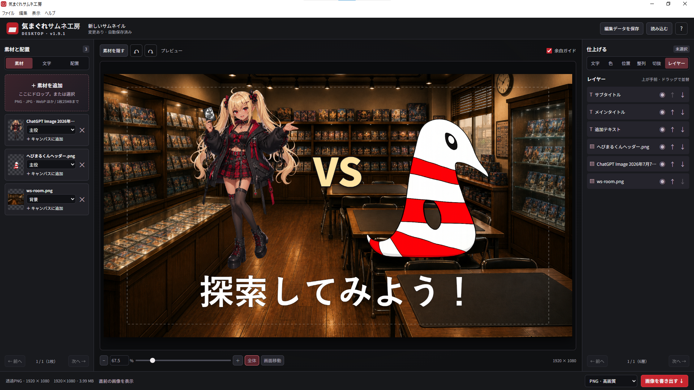

公開中・Webアプリ
気まぐれの大会室
TCGの個人戦を，受付から優勝決定まで管理できる大会運営ツールです．
インストール不要で，スマホ・PCのブラウザから利用できます．
主な機能
- 定員2〜32人．
先着順・抽選受付とキャンセル待ちの繰り上げに対応．
- スイスドロー，タイブレイク，プレーオフの組み合わせを管理．
自動設定では16人未満は全勝者が1人になるまで，16人はトップ4，17〜32人はトップ8です．
- 参加者のスマホで出席確認・結果報告・相手の承認．
スマホがない方は主催者がゲストとして登録・代行できます．
- 名前だけの登録，またはデッキリスト必須を選択．
デッキログ対応のブシロードTCGと，ポケカ公式デッキのURL・コード提出に対応します．
リストは本人と主催者だけが閲覧でき，主催者が公式ページで確認します．
- 順位表・大会記録をメモ帳で読めるテキスト形式で保存．
- 対応環境
- スマホ・PCのブラウザ（インターネット接続が必要）
- 利用方法
- 主催者はChatGPTでログインして大会を作成．
参加者には大会URLまたは大会コードを共有してください．
- 公開日
- 2026/10/21
大会室を開く最初に「デモを試す」から操作を確認できます．
独自大会向けの設定です．
開催する大会のルールを確認してご利用ください．
公開中
気まぐれサムネ工房
動画投稿サイトのサムネイルや，A4サイズのポスター作りにどうぞ！
他のサイズへの対応も，適宜行う予定です．

編集画面（v1.9.1）．
画像をクリックすると拡大できます．
主な機能
- HD・A4の縦横とTCG縦型サイズでサムネイルやポスターを制作．
- 文字の装飾・画像の配置・レイヤーの並べ替えに対応．
- PNG・JPEG・レイヤー付きPSDへの書き出し．
PSD内の文字は画像レイヤーです．
PSDの読み込みは未対応です． - 編集データの保存・読み込みに対応．
素材追加時も配置済みのパーツを維持します． - インストールと画像編集はオフラインで利用できます．
- 対応OS
- Windows 10／11（Intel・AMD 64bit）
- ライセンス
- 無料で利用できます．
商用利用もOKです．
ソフト本体の再配布は禁止です．
クレジット表記は任意ですが，記載していただけると嬉しいです．
表記例：気まぐれサムネ工房（気まぐれの館） - 最新バージョン
- 1.10.3
- 更新日
- 2026/10/21
Windows用をダウンロード新規インストール・更新共通版．
ダウンロードしたインストーラーを開き，画面の案内に沿って進めてください．
更新時はソフトを閉じてください．
更新履歴
- v1.10.3：位置・大きさのスライダー操作を改善．
上下キーによる連続した微調整を修正．
位置・幅・高さは1px刻みで調整できます． - v1.10.2：レイヤー付きPSD書き出しに対応．
TCG縦型キャンバスを追加．
素材追加時に既存の配置を維持するよう改善． - v1.9.2：新規インストールと旧版からの更新を統合．
v1.9.1までの編集機能を収録．